Admin
DJs
Schedule
View site
AM
Station admin · roster
DJs.
Add DJ
Current · 84
Alumni · 807
All
All departments
Current DJs
12 of 84 shown
On-air name
Name
Department
Email
Started
Status
Sir Walford
Wallace Sibblies
World
sirwalford@aol.com
1997-01-01
Current
Mark Stevenson
Sylvester Ryals
Specialty
ryalss@mail.amc.edu
2000-09-18
Current
Bill G
William Goss
Jazz
— none on file —
—
Current
Bill McCann
Bill McCann
Jazz
wcdbjazz@gmail.com
1985-04-01
Current
Mike Irry
Mike Terry
World
michaelterry71@yahoo.com
—
Current
Alex
Alex Muro
Rock
— none on file —
2004-09-01
Current
DJ Patrick D
Patrick Dodson
Rock
patrickjdodson@gmail.com
2008-02-10
Current
HEAT
Heather Williams
Rock
heatermeow@gmail.com
2008-09-10
Current
DJ Halftone
Gabrielle Hebert
Metal
ghebert@albany.edu
2024-09-03
Current
Jada R.
Jada Ramirez
Hip-Hop
jramirez@albany.edu
2025-01-21
Current
Glass & Smith
Eddie Smith
Electronic
esmith@albany.edu
2025-09-02
Current
ur favorite step uncle
Kenny Kowalski
Rock
— none on file —
2026-01-20
Current
Page 1 of 7
New roster entry
Add a DJ.
On-air name
Real name
Email
Department
Choose a department
Start date
Status
Current
set on save
The rest of the profile is filled in after saving
Cancel
Create DJ